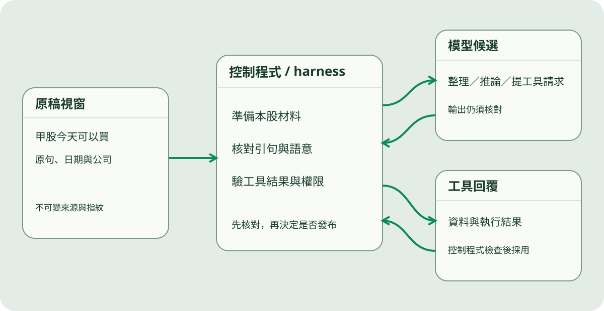

已有答案時，為什麼不用再讀試算表？
先查仍有效的答案；沒有可用答案時，才回到資料來源整理。
有效快取
直接回覆已整理的答案。
手機 → 快取 → 手機，不讀試算表。
命中快取：查詢已有存好的答案，而且仍在有效時間內。
三個判斷，直接看懂。
查的是同一件事
首頁和某一天的文章不是同一個查詢；有首頁快取，不代表每個日期都有。
答案仍在有效時間內
有效期依資料類型而異；過期內容不能假裝成即時行情。
備份也要核對年齡
背景整理可先準備答案。連續失敗且備份太舊時，需回源或清楚顯示暫無可用資料。
點開圖片，看每一層做什麼。
同一尺度，才看得出差異。
以下是 2026/10/07 留存的 API 樣本，不是今天的速度保證。動畫播放時間與 API 秒數分開。
命中約 0.09 秒來自 3 次樣本；未命中 7.19 秒為 1 次樣本。條長共用 7.19 秒上限；小值不放大。
模型提出答案，誰負責讓工具真的執行？
把原稿、控制程式、模型與工具回覆放在同一張工作桌；讓讀者看見分工。

01
先界定這次可以讀什麼
- 本股證據與必要前後文，保留主體、日期、否定語氣。
- 分類規則與結構化回覆要求。
- 這次工具允許做的唯讀查詢。
02
再核對模型交回什麼
- 引句是否確實存在，是否屬於同一檔。
- 把歷史賣出、建議不要賣與當天賣出分開。
- 不通過的單檔隔離；其餘繼續處理並留下紀錄。
以圖片打開更深入的問題。
二十個短章，保留完整內容。
不是刪成摘要；每次只看一章的完整內容。下列是正式施工目錄，不是已上線的二十頁。
- 01網站緣起與查詢
- 02資料來源與流向
- 03單日處理時間線
- 04資料規模與首屏
- 05快取查詢與更新
- 06模型輸入與切詞
- 07模型容量與用量
- 08代理推論與工具
- 09股名辨識與校字
- 10數字單位與歸屬
- 11匿名個股與證據
- 12操作主體與分類
- 13分類裁決與證據
- 14多來源操作合併
- 15公開說明與核對
- 16原稿版本與續跑
- 17持股回合與績效
- 18故障恢復與限制
- 19常見問題與改進
- 20作者資訊與聲明
基本規則直接呈現
圖卡上的結論不藏起來。視窗補充大圖、例外和查證依據。
每章有自己的圖像
不用同一個三框模板包住全部章節；依問題選擇時間線、工作桌、候選圖或回合軸。
一份內容只放一次
搬移前建立逐段清單；例子、來源、算式及限制均核對保留。